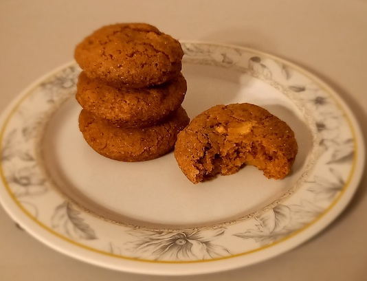

Cinnamon Apple Snickerdoodles
Ingredients:
-
125g Vegan Butter
-
1/2 Cup of Muscavado Sugar
-
2 tbsp of Granulated Sugar
-
1 Flax Egg
-
1 tsp of Vanilla Extract
-
1 tbsp of Maple Syrup
-
1 and 1/2 Cup + 2 tbsp of All-Purpose-Flour
-
1 tsp of Cinnamon
-
1 tsp of Baking Powder
-
1 Medium Apple
-
For Topping: 3 tbsp of Granulated Sugar
-
1 and 1/2 tsp of Cinnamon

Method:
-
In a mixing bowl, cream together butter and sugar until light and fluffy.
-
Add the flax egg and vanilla extract and mix until just combined.
-
In a separate bowl, whisk together flour, cinnamon powder and baking powder.
-
Dump the dry mixture into the wet mixture and mix until just combined. Use your hands, if necessary,
to mix everything together into a cookie dough consistency.
-
Cover and chill in the fridge for about 1 or 2 hours so that it's easier to handle and don't spread
while baking.
-
Scoop out small portions of the dough and roll them into balls.
-
In a small bowl, mix together sugar and cinnamon.
-
Roll cookie dough balls in the cinnamon and sugar mixture until fully coated.
-
Place them in a muffin tin, lightly oiled.
-
Bake for 15 minutes in the oven.
-
Make sure they cool fully.